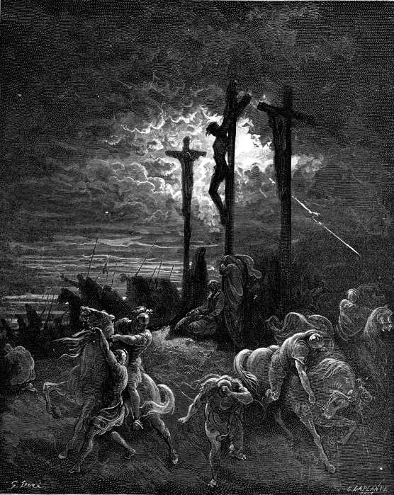
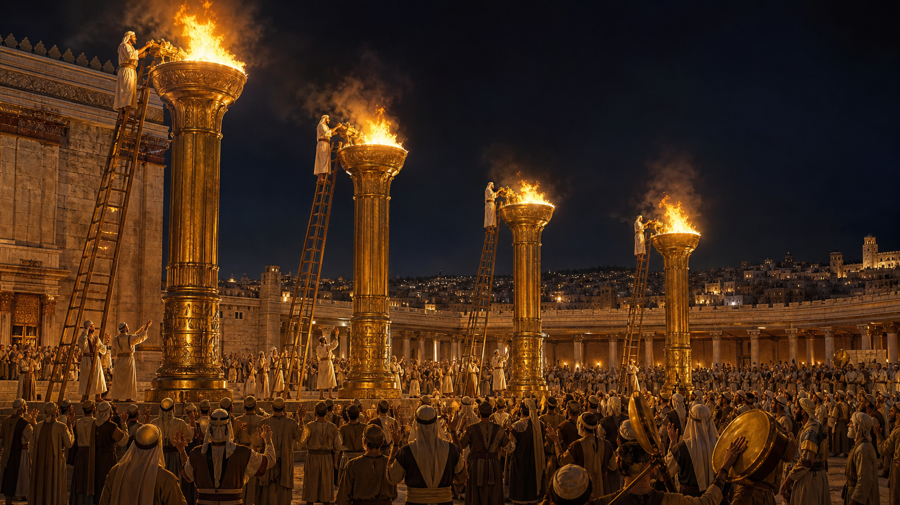
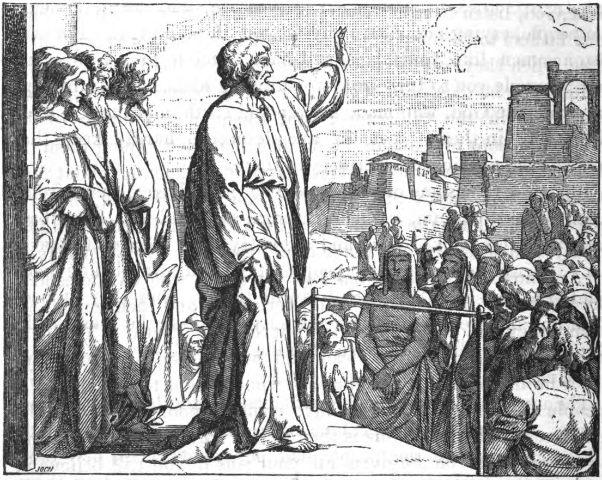

约翰福音与使徒行传：耶稣基督是世界的光

- 约翰福音 1:4-5： “生命在他里头，这生命就是人的光。光照在黑暗里，黑暗却不接受光。”
- 约翰福音 1:9： “那光是真光，照亮一切生在世上的人。”
- 核心信息： 耶稣是生命的源头和照亮世人的真光；黑暗不能胜过、熄灭或吞没祂的光。
剖析：亚当犯罪与人类落入罪中

- 听从谎言、违背神命： 亚当听从蛇的谎言，违背神清楚的命令（创3:1-6）。清楚记载了罪怎样进入人的生命。
- 惧怕、羞耻与躲藏： 亚当犯罪后感到羞耻和惧怕，并躲避神的面（创3:7-10）。罪破坏了人与神原有的相交，使人开始逃避神。
- 罪与死进入世界： “罪是从一人入了世界，死又是从罪来的”（罗5:12）。亚当的堕落使全人类落在罪、败坏和死亡的权势之下。
- 在亚当里的处境： “在亚当里众人都死了”（林前15:22）。人不是属灵中立的，而是死在过犯罪恶之中，随从今世的风俗，顺服空中掌权者（弗2:1-3）。
剖析：圣经如何把黑暗与罪联系起来
- 黑暗代表恶行： “光来到世间，世人因自己的行为是恶的，不爱光，倒爱黑暗”（约3:19）。人爱黑暗，因为不愿自己的罪被光显明。
- 黑暗代表罪人的旧生命： “从前你们是暗昧的，但如今在主里面是光明的”（弗5:8）；保罗随后吩咐信徒不要参与“暗昧无益的事”（弗5:11）。
- 在黑暗里行就是活在罪中： “我们若说是与神相交，却仍在黑暗里行，就是说谎话，不行真理了”（约壹1:6）。
- 黑暗也与撒但的权势相连： 《使徒行传》26:18 将“从黑暗中归向光明”与“从撒但权下归向神”并列；歌罗西书1:13也说神“救了我们脱离黑暗的权势”。
- 黑暗包括属灵的蒙蔽： “这世界的神弄瞎了不信之人的心眼”，使他们看不见基督荣耀福音的光（林后4:4）。
- 全然败坏的真实图景： 黑暗不是单纯缺少知识或个人道德缺陷，而是人的思想、情感和意志都被罪影响，无法靠自己归向神。
- 对比虚假的满足感： 每个人在黑暗中都有自己的“舒适区”。
- 属灵的死寂： 就像物理世界没有光就没有生命，属灵的黑暗意味着灵魂被锁在罪的牢笼中，没有方向、没有盼望，处于属灵的死亡状态。
核心经文与主题信息
- 核心经文： 约翰福音 8:12 —— 耶稣又对众人说：“我是世界的光。跟从我的，就不在黑暗里走，必要得着生命的光。”
- 使徒的呼召： 使徒行传 26:17b-18 —— “我差你到他们那里去，要叫他们的眼睛得开，从黑暗中归向光明，从撒但权下归向神；又因信我，得蒙赦罪，和一切成圣的人同得基业。”
- 本课的主题： 神以真光破除属灵的绝对黑暗，呼召并差遣门徒归向神。
- 贯穿信息的深层冲突： 属灵的黑暗（撒但权下/罪的掩藏）与神圣洁的真光（神的主权/赦罪与成圣）
- 耶稣不仅是旧约预言的应验者，更是照亮人类历史绝望黑夜的唯一光源。
引入（犹太历史与中东文化中的“光”）
- 古近东文化的“光”： 在古代中东文化中，光不仅是物理照明，更象征着秩序、生命和神的同在。对于以色列人而言，光直接指向耶和华神（诗篇27:1“耶和华是我的亮光”）。
历史背景：以色列在旷野

- 历史背景——旷野的火柱： 以色列人在旷野中漂流时，神以“火柱”在夜间亲自引导他们。光代表着神绝对的保护和方向。
引入(住棚节的圣殿之光)

- 耶稣宣告“我是世界的光”（约8:12）正是在犹太人的住棚节期间。节期中，圣殿的女院会点燃四座巨大的金灯台。
- 神圣的颠覆： 节期接近尾声，当圣殿巨大的灯火熄灭，人造的辉煌散去，黑暗重新笼罩大地时，耶稣站出来宣告——祂才是那永不熄灭的、真正引导全人类的“火柱”。祂取代了圣殿的灯台，成为全世界的真光。
旧约光的预表与前奏
- 创世记 1:3 —— 创造之光： 神的第一句话是“要有光”。这里的光指的是秩序、生命和神的同在。基督就是那道道成肉身的光。
- 出埃及记 13:21-22 —— 旷野的火柱： 以色列人不是靠火把行走，而是靠神亲自临在的火柱。耶稣说自己是光，意味着祂就是那位在旷野中带领以色列人的耶和华，如今祂不仅在前面引导，更住在信徒里面。
- 民数记 6:24-26 —— 亚伦的祝福： “愿耶和华使祂的脸光照你，赐恩给你。”在希伯来文化中，“脸面光照”象征着神的喜悦和垂怜。耶稣作为“世界的光”，就是神将祂的脸完全向人类显明，不再掩面。
- 以赛亚书 9:2 —— 预言的曙光： “在黑暗中行走的百姓看见了大光。”这不是单纯的地理预言，而是救赎性的应许。基督的降临，正是终结那长达数百年的“沉默黑夜”。
- 诗篇 27:1 —— 诗人的确据： 大卫说：“耶和华是我的亮光，是我的拯救。”这里的亮光与拯救不可分割。没有光，救赎就无从谈起；没有耶稣，这光也无法显明。
光的本质：穿透、拆毁与重建
- 审判与暴露并存： 罪人本性是“爱黑暗”（约3:19），因为光不仅带来生命，也带来审判与暴露。
- 手电筒 vs. 太阳： 许多人试图用自己的“手电筒”——自我救赎、心理调适、宗教仪式——来照亮生活，却拒绝基督这束烈日般的强光。祂会照出我们内心最深处的偶像。
- 光显明罪，也带来洁净与更新： “凡事受了责备，就被光显明出来”（弗5:13）。神的光使人承认自己的罪；凡认罪的，神必赦免并洗净他（约壹1:7-9），使他脱去旧人、穿上照着神形象所造的新人（弗4:22-24）。
恩典的绝对主权：怜悯与圣洁的光

- 恩典的绝对主权： 黑暗无法自己产生光，陷入属灵黑夜的人也无法靠自己走出来。真光照进生命，使瞎眼的得看见，完全是神绝对的主权与恩典（“要叫他们的眼睛得开”）。
- 怜悯的光（得蒙赦罪）： 真光（基督在十字架上的流血代赎）能彻底洗净灵魂的污渍，带来完全的赦免。
- 圣洁的光（同得基业）： 光不仅仅让人罪得赦免，更使人“成圣”。光一旦照亮，生命的特质就会被改变，神那充满辐射力的生命开始在信徒的内心中运作，结出光明的果子。
生活应用：真光的差遣与挑战

- 世界的唯一光源： 这个充满了相对主义的世界，能看到真光的唯一途径，就是基督徒举起神话语的灯，让主耶稣透过我们的生命照耀出来（太5:14）。
- 直击痛点的挑战： 很多信徒（甚至从小在教会长大的人）跟随耶稣，主要关注的是“我能得到什么恩典”。这是一种极度浅薄的“消费型信仰”。
- 真实的呼召： 教会不仅是吸引我们来享受温暖和祝福的温室，更是把我们“差遣”出去的基地。耶稣对保罗说：“我差你到他们那里去”。
结论
- 神的恩典不仅要把我们从罪恶的黑暗中拯救出来（赦罪），更要彻底翻转我们的生命特质（成圣）。
- 耶稣是光的源头：根据《约翰福音》，耶稣是世界的光与生命的源泉，光照在黑暗里，凡跟从他的就不会在黑暗中行走。
- 教会彰显基督之光： 基督是教会的元首，教会是祂的身体（弗1:22-23；西1:18）。耶稣对门徒说："你们是世上的光"，并吩咐他们以好行为荣耀天父（太5:14-16）。信徒"从前你们是暗昧的，但如今在主里面是光明的，行事为人就当像光明的子女。"（弗5:8），应当在弯曲悖谬的世代"好像明光照耀"（腓2:15）。月亮反射太阳只是一个说明性的比喻，并非圣经原有的表述；教会本身不是光的源头，而是借着生命与见证彰显基督的光。
- 信徒的使命与大能：信徒被赋予了在黑暗世界中作光的崇高荣誉。借着圣灵的大能，我们应当像建在山上的城或放在台上的灯一样，将这光芒强有力地散播出去，照亮所有能看见的人。
应用
- 拒绝“浅薄的恩典”： 检视自己的信仰动机，不再做一个仅仅索取平安和祝福的“消费型”基督徒。
- 立志做发光者： 在学校、职场面对不公义或霸凌时，愿意毫无条件、不计代价地站出来，反射基督的真光。
- 持守绝对真理： 当为了信仰被孤立、被嘲笑时，依然敢于持守绝对的真理坐标。
讨论问题
- 结合住棚节圣殿点灯的历史背景，耶稣在节期灯火熄灭后宣告“我是世界的光”，这对你认识祂的权柄和神圣供应有什么新的启发？
- 坦诚地分享一次你经历“想要把自己的罪或软弱掩藏在黑暗中”的时刻，基督的真光（神的话语或圣灵的光照）是如何让你经历赦免并带给你改变的？
- 在当前的学校或职场环境中，如果你亲眼目睹了一起欺凌或极度不公义的事件，作为被主“差遣”去发光的人，你会如何付诸实际行动来活出信仰的见证？